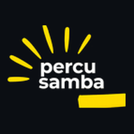
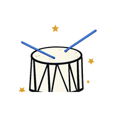

Plataformas de matrícula e cobrança
no arcódigo privadoÉ a minha frente principal. Desenvolvo e mantenho os sistemas em que os alunos se inscrevem e pagam, e em que as escolas acompanham turmas e recebimentos. Juntas, somam cerca de 300 matrículas ativas.
- Matrícula on-line, com painel do aluno, do professor e do administrador.
- Cobrança recorrente por PIX, boleto e cartão, com parcelamento e pró-rata.
- Split de recebíveis entre a plataforma e a escola.
- Régua de inadimplência, com avisos por WhatsApp e e-mail.
- Conciliação diária com o gateway, por webhooks e rotinas agendadas.
- Emissão automática de nota fiscal de serviço (NFS-e).
- Login por telefone e e-mail, com a migração de 274 contas para o Firebase Authentication.
- Troca do gateway de pagamento, do Asaas para o Pagar.me, em fases, mantendo as cobranças em andamento no gateway antigo.
Como conferir
- As cinco estão no ar. Abra qualquer uma.
- Siga o formulário de matrícula até a etapa de pagamento. Não precisa concluir.
-
Orquestra VoadoraPython/Flask. A maior: cerca de 1.800 parcelas, com quatro rotinas diárias.Confira
-
Academia Cristã de MúsicaPython/Flask. Turmas, financeiro e carteirinha do aluno.Confira
-

PercuSambaPython/Flask. Split de recebíveis e cobrança automática por WhatsApp.Confira -

PercussaçaNext.js, TypeScript e Firestore. No ar em 10 dias, com 84 testes automatizados.Confira -
Choro BatucadaNext.js, TypeScript e Firestore. Matrícula, mensalidades e área de aulas em vídeo.Confira